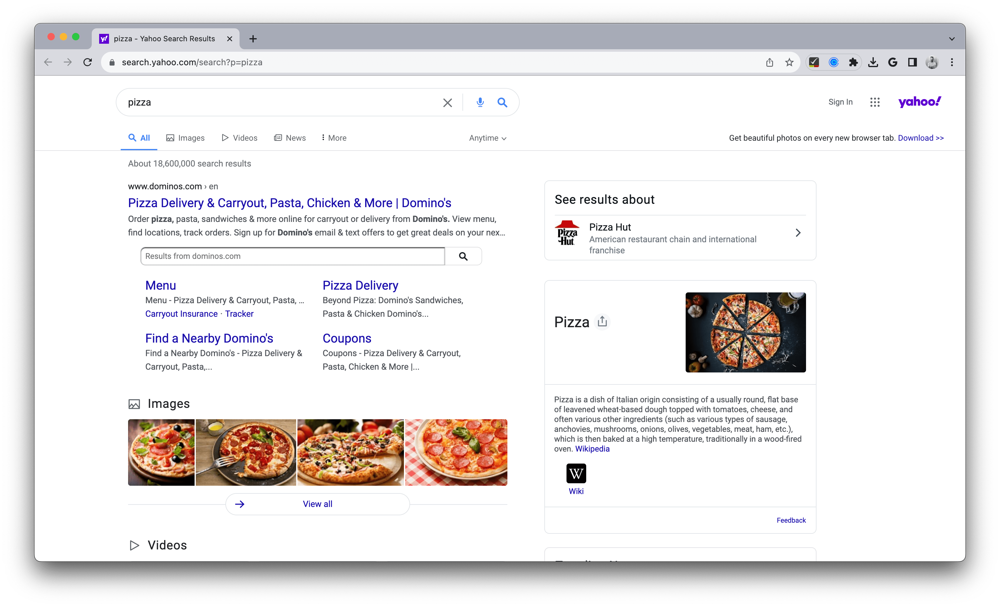

Note: This is a guest post by Manthan Koolwal, founder of Scrapingdog.
Web scraping is the process of extracting data from websites. It is usually done in an automated manner to obtain a large amounts of data through various websites, without the need to gather data by hand.
In a previous post, we introduced this method and illustrated it with a Wikipedia page. Although there are a lot of use cases of web scraping, in this blog post, we are restricting ourselves to scraping search results from Yahoo using R. Scraping search engine results can help you with SEO analysis, competitor analysis, keyword research, trend analysis, etc.
After installing R and RStudio, we first need to load the necessary packages by running the following commands:1
# install.packages("rvest")
# install.packages("jsonlite")
# install.packages("purrr")
library(rvest)
library(jsonlite)
library(purrr)The {rvest} package is for web scraping, the {jsonlite} package is for working with JSON data and the {purrr} package is for working with functions and vectors.
It is always better to decide in advance what exactly we are going to scrape. For this tutorial, we are going to scrape search results from this URL:

We are going to scrape the following data points from this page:
For this, we define the URL of the Yahoo search results page that we want to scrape. In this case, we are searching for the word “pizza”.
# URL of the Yahoo search results page
url <- "https://search.yahoo.com/search?p=pizza"We then use the read_html() function from the {rvest} package to read the HTML content of the provided URL:
# Read the HTML content of the page
page <- read_html(url)This creates an HTML document object that we can work with:
str(page)## List of 2
## $ node:<externalptr>
## $ doc :<externalptr>
## - attr(*, "class")= chr [1:2] "xml_document" "xml_node"Here’s where we start the process of extracting the search results:
# Extract search results
results <- page %>%
html_nodes(".algo-sr") %>% # Selector for search result elements
html_nodes("a") %>% # Select the <a> elements within the search results
# Extract link, title, and description attributes
map_df(~ data.frame(
link = .x %>% html_attr("href"),
title = .x %>% html_text(),
description = .x %>% html_attr("title"),
stringsAsFactors = FALSE
))In the code above:
%>% (pipe operator) to chain multiple operations together for clarity.html_nodes(".algo-sr") to select the search result elements with the class .algo-sr. These elements contain the links to the search results.<a> elements using html_nodes("a"). These <a> elements contain the link, title, and description information.map_df(), we iterate through each <a> element and extract the link, title, and description attributes.Finally, we convert the results data frame into JSON format using the toJSON() function from the {jsonlite} package. The pretty = TRUE argument adds indentation for better readability. We use cat() to print the JSON-formatted results to the console.
# Print the results in JSON format
cat(toJSON(results, pretty = TRUE))## [
## {
## "link": "https://r.search.yahoo.com/_ylt=AwrErl78Qudk.08NtsVXNyoA;_ylu=Y29sbwNiZjEEcG9zAzEEdnRpZAMEc2VjA3Ny/RV=2/RE=1692906364/RO=10/RU=https%3a%2f%2fwww.dominos.com%2fen%2f/RK=2/RS=0Yw3I.ROwngvCBu6CPZr8f5nvdk-",
## "title": "www.dominos.com › enPizza Delivery & Carryout, Pasta, Chicken & More | Domino's"
## },
## {
## "link": "https://r.search.yahoo.com/_ylt=AwrErl78Qudk.08NwsVXNyoA;_ylu=Y29sbwNiZjEEcG9zAzIEdnRpZAMEc2VjA3Ny/RV=2/RE=1692906364/RO=10/RU=https%3a%2f%2fwww.pizzahut.com%2fmenu/RK=2/RS=EQoZv8ak0Kv5QDfk_wbfgy6ahJg-",
## "title": "www.pizzahut.com › menuPizza Hut Menu - Order Online | Pizza Hut"
## },
## {
## "link": "https://r.search.yahoo.com/_ylt=AwrErl78Qudk.08Nw8VXNyoA;_ylu=Y29sbwNiZjEEcG9zAzIEdnRpZAMEc2VjA3Ny/RV=2/RE=1692906364/RO=10/RU=http%3a%2f%2fcc.bingj.com%2fcache.aspx%3fq%3dpizza%26d%3d4513525580824645%26mkt%3den-US%26setlang%3den-US%26w%3d7Hh_ulp0TXcEg4Q_eetSe-EjQiz044ye/RK=2/RS=PXALoofwnAAus3HXo5CkgXhtO5E-",
## "title": "Cached"
## },
## {
## "link": "https://r.search.yahoo.com/_ylt=AwrErl78Qudk.08NxMVXNyoA;_ylu=Y29sbwNiZjEEcG9zAzMEdnRpZAMEc2VjA3Ny/RV=2/RE=1692906364/RO=10/RU=https%3a%2f%2fwww.pizzahut.com%2f/RK=2/RS=3RDQN4KRogvytQkkGZwJWJSmlFE-",
## "title": "www.pizzahut.comPizza Hut | Delivery & Carryout - No One OutPizzas The Hut!"
## },
## {
## "link": "https://r.search.yahoo.com/_ylt=AwrErl78Qudk.08NxcVXNyoA;_ylu=Y29sbwNiZjEEcG9zAzMEdnRpZAMEc2VjA3Ny/RV=2/RE=1692906364/RO=10/RU=http%3a%2f%2fcc.bingj.com%2fcache.aspx%3fq%3dpizza%26d%3d4544062801248337%26mkt%3den-US%26setlang%3den-US%26w%3dtPWjDZhuaKMSZoUJhGr2O4uzzd46pLy3/RK=2/RS=AOVYaxqNvvOYyf1kY9ZCCsDOyZ4-",
## "title": "Cached"
## },
## {
## "link": "https://r.search.yahoo.com/_ylt=AwrErl78Qudk.08NxsVXNyoA;_ylu=Y29sbwNiZjEEcG9zAzMEdnRpZAMEc2VjA3Ny/RV=2/RE=1692906364/RO=10/RU=https%3a%2f%2fwww.pizzahut.com%2f/RK=2/RS=3RDQN4KRogvytQkkGZwJWJSmlFE-",
## "title": ""
## },
## {
## "link": "https://r.search.yahoo.com/_ylt=AwrErl78Qudk.08Nx8VXNyoA;_ylu=Y29sbwNiZjEEcG9zAzMEdnRpZAMEc2VjA3Ny/RV=2/RE=1692906364/RO=10/RU=https%3a%2f%2fwww.pizzahut.com%2f/RK=2/RS=3RDQN4KRogvytQkkGZwJWJSmlFE-",
## "title": ""
## },
## {
## "link": "https://r.search.yahoo.com/_ylt=AwrErl78Qudk.08NyMVXNyoA;_ylu=Y29sbwNiZjEEcG9zAzMEdnRpZAMEc2VjA3Ny/RV=2/RE=1692906364/RO=10/RU=https%3a%2f%2fwww.pizzahut.com%2f/RK=2/RS=3RDQN4KRogvytQkkGZwJWJSmlFE-",
## "title": ""
## },
## {
## "link": "https://r.search.yahoo.com/_ylt=AwrErl78Qudk.08NycVXNyoA;_ylu=Y29sbwNiZjEEcG9zAzMEdnRpZAMEc2VjA3Ny/RV=2/RE=1692906364/RO=10/RU=https%3a%2f%2fwww.pizzahut.com%2f/RK=2/RS=3RDQN4KRogvytQkkGZwJWJSmlFE-",
## "title": ""
## },
## {
## "link": "https://r.search.yahoo.com/_ylt=AwrErl78Qudk.08NysVXNyoA;_ylu=Y29sbwNiZjEEcG9zAzMEdnRpZAMEc2VjA3Ny/RV=2/RE=1692906364/RO=10/RU=https%3a%2f%2fwww.pizzahut.com%2f/RK=2/RS=3RDQN4KRogvytQkkGZwJWJSmlFE-",
## "title": ""
## },
## {
## "link": "https://r.search.yahoo.com/_ylt=AwrErl78Qudk.08N0sVXNyoA;_ylu=Y29sbwNiZjEEcG9zAzQEdnRpZAMEc2VjA3Ny/RV=2/RE=1692906364/RO=10/RU=https%3a%2f%2fwww.papajohns.com%2f/RK=2/RS=bH8crJVzfX7dRqMLLvGYKpLDeMA-",
## "title": "www.papajohns.comPapa Johns Pizza Delivery & Carryout - Best Deals on Pizza ..."
## },
## {
## "link": "https://r.search.yahoo.com/_ylt=AwrErl78Qudk.08N08VXNyoA;_ylu=Y29sbwNiZjEEcG9zAzQEdnRpZAMEc2VjA3Ny/RV=2/RE=1692906364/RO=10/RU=http%3a%2f%2fcc.bingj.com%2fcache.aspx%3fq%3dpizza%26d%3d4855555305394749%26mkt%3den-US%26setlang%3den-US%26w%3d8IQPetFPzJugDURq7SF3Kq_9VpI1AXhm/RK=2/RS=3YXYmWt57xrxe48Sc5RSMJ1sHbM-",
## "title": "Cached"
## },
## {
## "link": "https://r.search.yahoo.com/_ylt=AwrErl78Qudk.08N1MVXNyoA;_ylu=Y29sbwNiZjEEcG9zAzQEdnRpZAMEc2VjA3Ny/RV=2/RE=1692906364/RO=10/RU=https%3a%2f%2fwww.papajohns.com%2f/RK=2/RS=bH8crJVzfX7dRqMLLvGYKpLDeMA-",
## "title": ""
## },
## {
## "link": "https://r.search.yahoo.com/_ylt=AwrErl78Qudk.08N1cVXNyoA;_ylu=Y29sbwNiZjEEcG9zAzQEdnRpZAMEc2VjA3Ny/RV=2/RE=1692906364/RO=10/RU=https%3a%2f%2fwww.papajohns.com%2f/RK=2/RS=bH8crJVzfX7dRqMLLvGYKpLDeMA-",
## "title": ""
## },
## {
## "link": "https://r.search.yahoo.com/_ylt=AwrErl78Qudk.08N1sVXNyoA;_ylu=Y29sbwNiZjEEcG9zAzQEdnRpZAMEc2VjA3Ny/RV=2/RE=1692906364/RO=10/RU=https%3a%2f%2fwww.papajohns.com%2f/RK=2/RS=bH8crJVzfX7dRqMLLvGYKpLDeMA-",
## "title": ""
## },
## {
## "link": "https://r.search.yahoo.com/_ylt=AwrErl78Qudk.08N18VXNyoA;_ylu=Y29sbwNiZjEEcG9zAzQEdnRpZAMEc2VjA3Ny/RV=2/RE=1692906364/RO=10/RU=https%3a%2f%2fwww.papajohns.com%2f/RK=2/RS=bH8crJVzfX7dRqMLLvGYKpLDeMA-",
## "title": ""
## },
## {
## "link": "https://r.search.yahoo.com/_ylt=AwrErl78Qudk.08N2MVXNyoA;_ylu=Y29sbwNiZjEEcG9zAzQEdnRpZAMEc2VjA3Ny/RV=2/RE=1692906364/RO=10/RU=https%3a%2f%2fwww.papajohns.com%2f/RK=2/RS=bH8crJVzfX7dRqMLLvGYKpLDeMA-",
## "title": ""
## },
## {
## "link": "https://r.search.yahoo.com/_ylt=AwrErl78Qudk.08N2cVXNyoA;_ylu=Y29sbwNiZjEEcG9zAzUEdnRpZAMEc2VjA3Ny/RV=2/RE=1692906364/RO=10/RU=https%3a%2f%2flocations.pizzahut.com%2f/RK=2/RS=cjaMfWJyHZ3zzhhnDKz8jypnxv0-",
## "title": "locations.pizzahut.comPizza Hut Near Me - Store Locations | Pizza Hut"
## },
## {
## "link": "https://r.search.yahoo.com/_ylt=AwrErl78Qudk.08N2sVXNyoA;_ylu=Y29sbwNiZjEEcG9zAzUEdnRpZAMEc2VjA3Ny/RV=2/RE=1692906364/RO=10/RU=http%3a%2f%2fcc.bingj.com%2fcache.aspx%3fq%3dpizza%26d%3d4520534968571043%26mkt%3den-US%26setlang%3den-US%26w%3dqPujuHsBFl4Hs9ghSFz6b1ORVP8st7vj/RK=2/RS=7kcaBS39KfDSVMMdoJjrbyMyfWk-",
## "title": "Cached"
## }
## ]Thanks for reading.
This was a simple tutorial in which we scraped Yahoo search results with R. Following the same process, you can create your own web crawler which can scrape search results from Yahoo for any web query.
Of course, you can scrape other search engines with almost the same technique. Also, you can check out this tutorial on web scraping Google search results using Python.
As always, if you have a question or a suggestion related to the topic covered in this article, please add it as a comment so other readers can benefit from the discussion.
Note that, as for any R package, it must first be installed (with the install.packages() function) before being loaded (with the library() function).↩︎